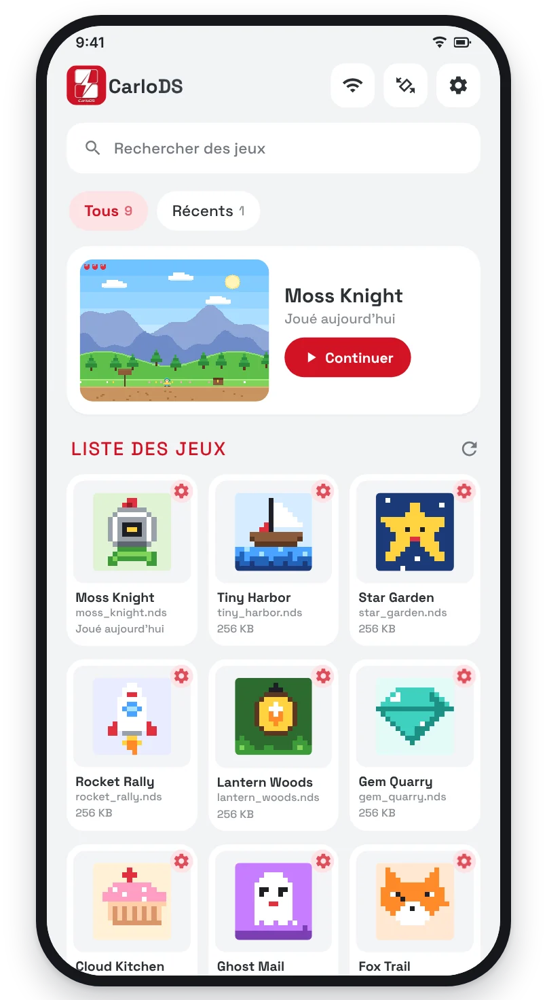
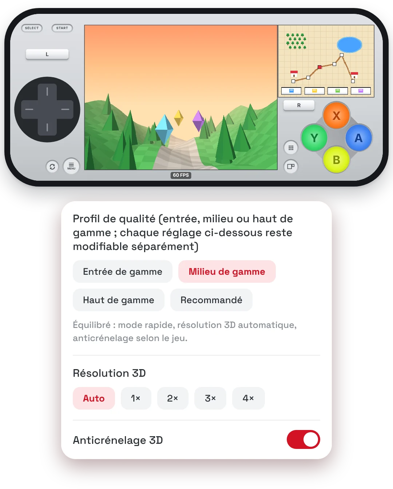
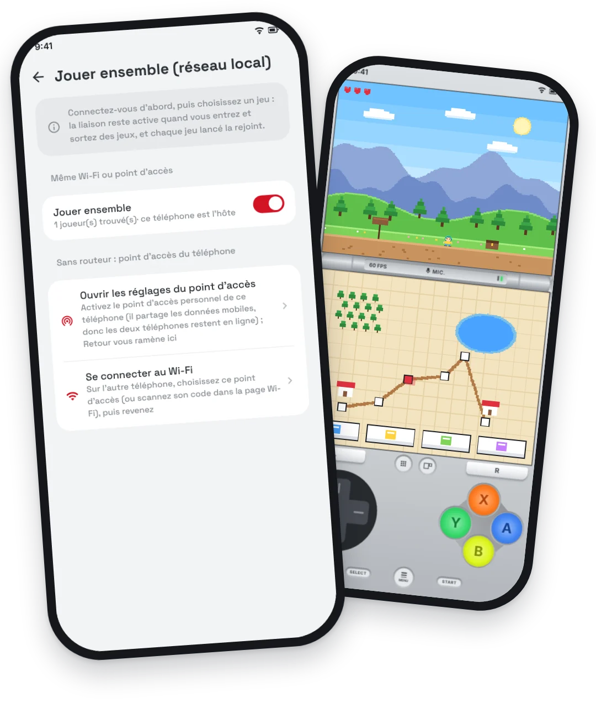

Fonctions
CarloDS est un émulateur NDS pour smartphones et tablettes Android. Son cœur d'émulation – processeurs ARM9 et ARM7, graphismes 2D et 3D, audio, sans-fil et BIOS intégré – a été entièrement développé en interne et calibré sur la console d'origine. La plupart des jeux fonctionnent sans fichier BIOS ; le format ZIP est pris en charge.
Un cœur maison de haute précision
- Calibrage d'après les tests sur matériel : timing CPU, DMA, rendu 3D, anticrénelage, découpage, etc.
- Deux cœurs Le cœur précis, au plus près du matériel d'origine, et le cœur rapide avec JIT, nettement plus performant
- BIOS intégré ; vos fichiers BIOS et firmware placés dans le dossier des jeux sont utilisés automatiquement

Bibliothèque de jeux
- Lecture automatique des icônes et des titres ; sous-dossiers et fichiers ZIP pris en charge
- Recherche, jeux récents et accès direct « Continuer »
- Jaquette personnalisable par jeu
- Test de performances facultatif au premier lancement, avec réglages recommandés

Disposition des écrans et commandes
- Portrait, paysage grand + petit, paysage côte à côte et paysage écran unique, en un geste, avec inversion des écrans
- Écran inférieur tactile
- Orientation de l'écran au choix
- Touches à l'écran masquables pour jouer à la manette
- Fermeture et ouverture du couvercle (la plupart des jeux se mettent en veille)

Graphismes et performances
- Profils entrée, milieu et haut de gamme, et un profil recommandé après le test
- 3D jusqu'à 4× la résolution (ou automatique), anticrénelage 3D, lissage des textures et agrandissement 2D lissé
- Rendu Software, OpenGL ES et Vulkan
- Filtres Lissage, LCD, lignes de balayage, xBR et netteté CAS ; luminosité et contraste réglables
- Options de performances Sortie 16 bits, 3D multithread, géométrie instantanée, saut d'images automatique
- Réglages d'image, de performances et de manette par jeu
- Affichage Animation de démarrage, images par seconde, statistiques

Sauvegardes et outils
- Plusieurs emplacements de sauvegarde d'état avec annulation ; sauvegarde automatique en cas d'interruption
- Avance rapide (jusqu'à 4×), retour arrière (5, 10 ou 15 secondes par appui) et tir automatique à vitesse réglable
- Raccourcis en jeu Volume, sauvegarde rapide, capture, couvercle, triche, recherche mémoire, retour arrière
- Triche Codes Action Replay, bases usrcheat.dat et cheats.xml, fichiers .mch, .dct, .cht et texte
- Recherche mémoire en fenêtre flottante pendant le jeu, avec vue mémoire et journal des écritures

Jeu sans fil et contenu téléchargeable
- Jeu sans fil local entre appareils connectés au même Wi‑Fi, ou via un point d'accès mobile
- Remplacement intégré du service en ligne arrêté, hébergé sur votre appareil (certains jeux)
- Contenu téléchargeable (expérimental) Cadeaux et distributions intégrés, disponibles hors ligne

Fonctions supplémentaires
- Prise en charge de RetroAchievements
- Sauvegardes dans le cloud via Google Drive
- Manettes et claviers, avec réattribution de toutes les touches
- Microphone pour les jeux où il faut souffler ou parler ; enregistrement uniquement pendant le jeu
- Emplacement GBA Jeu GBA issu de RetroGenY, notre émulateur GBA, ou Rumble Pak via la vibration de l'appareil
- Profil de la console Surnom, anniversaire, couleur préférée, message et langue
- Signalement de problème Envoi des journaux au développeur par e-mail